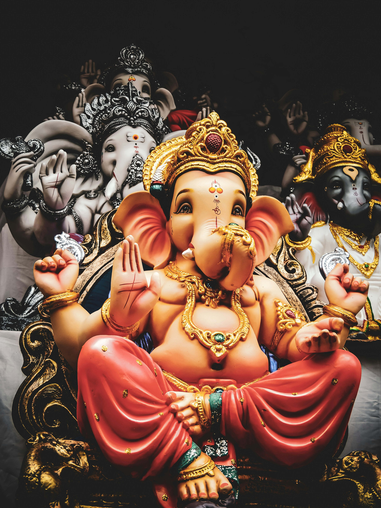

One day Goddess Parvati was at home on Mt.Kailash preparing for a bath. As she didn’t want to be disturbed, she told Nandi, her husband Shiva’s Bull, to guard the door and let no one pass. Nandi faithfully took his post, intending to carry out Parvati’s wishes. But, when Shiva came home and naturally wanted to come inside, Nandi had to let him pass, being loyal first to Shiva. Parvati was angry at this slight, but even more than this, at the fact that she had no one as loyal to Herself as Nandi was to Shiva. So, taking the turmeric paste (for bathing) from her body and breathing life into it, she created Ganesha, declaring him to be her own loyal son. The next time Parvati wished to bathe, she posted Ganesha on guard duty at the door. In due course, Shiva came home, only to find this strange boy telling him he couldn’t enter his own house! Furious, Shiva ordered his army to destroy the boy, but they all failed! Such power did Ganesha possess, being the son of Devi Herself! This surprised Shiva. Seeing that this was no ordinary boy, the usually peaceful Shiva decided he would have to fight him, and in his divine fury severed Ganesha’s head, killing him instantly. When Parvati learned of this, she was so enraged and insulted that she decided to destroy the entire Creation! Lord Brahma, being the Creator, naturally had his issues with this, and pleaded that she reconsider her drastic plan. She said she would, but only if two conditions were met: one, that Ganesha be brought back to life, and two, that he be forever worshipped before all the other gods. Shiva, having cooled down by this time, and realizing his mistake, agreed to Parvati’s conditions. He sent Brahma out with orders to bring back the head of the first creature he crosses that is laying with its head facing North. Brahma soon returned with the head of a strong and powerful elephant, which Shiva placed onto Ganesha’s body. Breathing new life into him, he declared Ganesha to be his own son as well and gave him the status of being foremost among the gods, and leader of all the ganas (classes of beings), Ganapati.
